MANDARIN PANCAKES
|
Yield Makes 12 large pancakes or up to 36 smaller pancakes |
Active Time 15 minutes Total Time 45 minutes |
INGREDIENTS
10 ounces (280 g) all-purpose flour, plus more for dusting
3½ ounces (100 ml) boiling water
3½ ounces (100 ml) cold water
Vegetable or roasted sesame oil for brushing
Mandarin pancakes* are those ultrathin pancakes you use to wrap up moo shu pork or Peking duck. They’re really magical. And I don’t mean that in the way that, say, eating crab by the moonlight on a beach in Thailand is magical or the way drinking an ice-cold beer in a steaming hot shower on a Sunday afternoon with no plans for the rest of the day is magical. I mean it in the way that a neat card trick is magical. You can pick up one of those lightly blistered pancakes with their pliant elasticity and think to yourself How in the heck did they get these so translucently thin?—but as with all magic tricks, once you see how it’s done, it all seems so simple.
These pancakes are one of the first things I ever remember cooking. I watched as my dad made a dough out of flour and boiling water (which results in dough that is as supple and easy to roll as play dough), then helped him knead it into a smooth ball, which we cut up into smaller balls that we lightly flattened out. The next step is the real trick. Rather than rolling out the pancakes one at a time, he brushed one pancake with a thin layer of oil before stacking another on top of it and rolling them out together. As the stacked disks of dough cooked in a hot, dry skillet, they started to puff and steam. Once they were blistered on both sides, my dad would take them out, then it was my job to peel the two pancakes apart—an easy task thanks to the oil and steam.
What you wind up with is two pancakes that are half as thick as the thinnest single pancake you can roll out.
The purpose of the hot water is to speed up starch hydration and to break down some of the proteins responsible for gluten formation. This makes hot water doughs very easy to roll out and shape as well as quite tender once cooked. Reducing gluten formation also means the finished pancakes are a little less stretchy and elastic than they would be with a cold-water dough. I’ve found that to get the best of both worlds it’s best to start the dough with boiling water (to deactivate some protein), then finish it with cold water (for more elasticity). Resting the dough after kneading allows gluten to relax and starch to finish hydrating, which is essential for achieving a smooth, pliable dough that’s easy to roll.
If you want very thin, small pancakes, you can also use a pasta roller in place of a rolling pin to roll out the stacked dough balls. (Make the dough balls about a third of the size recommended in the recipe, and don’t go thinner than setting 3 or 4 or the pancakes will become too delicate to peel apart!)
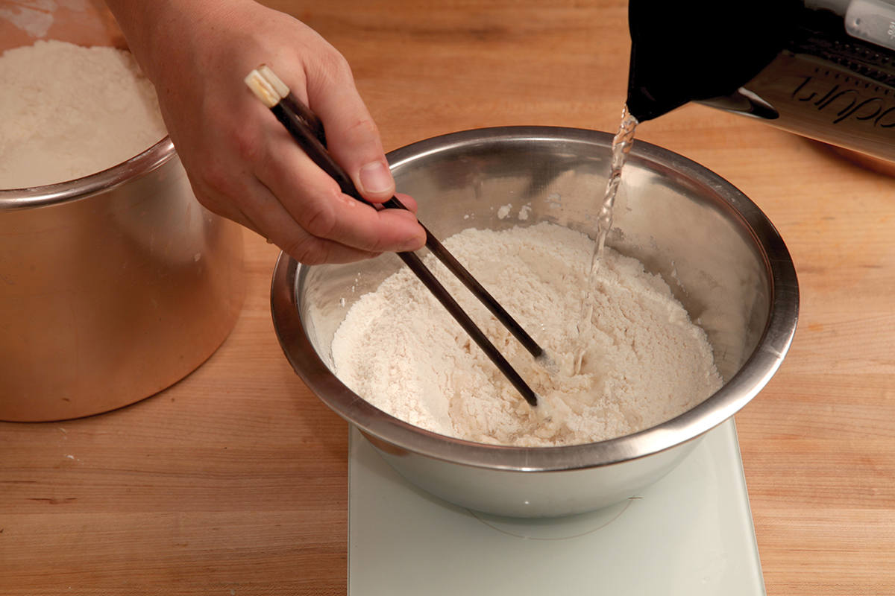
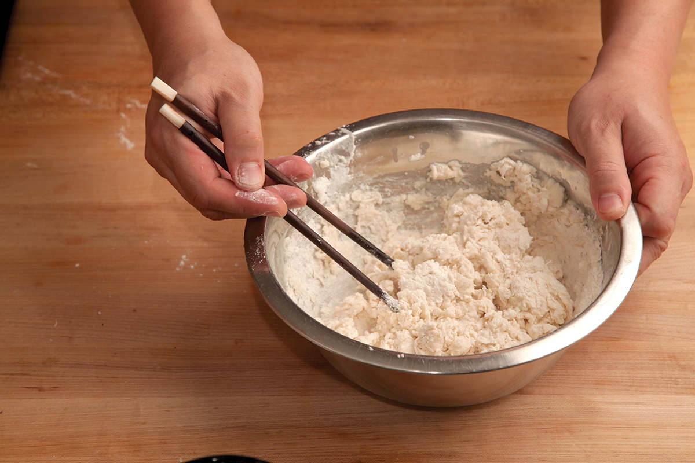
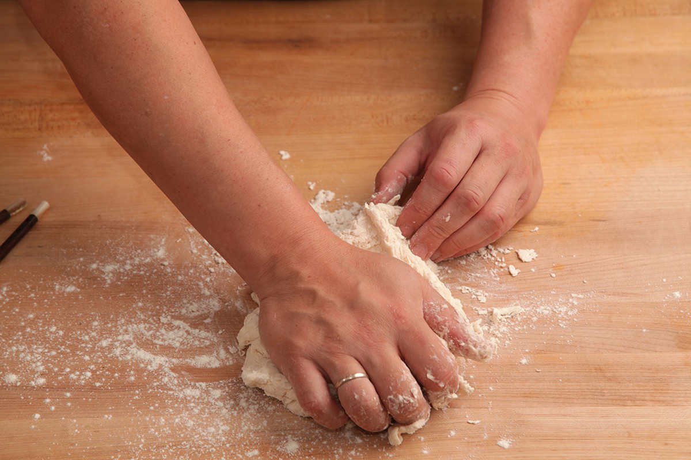
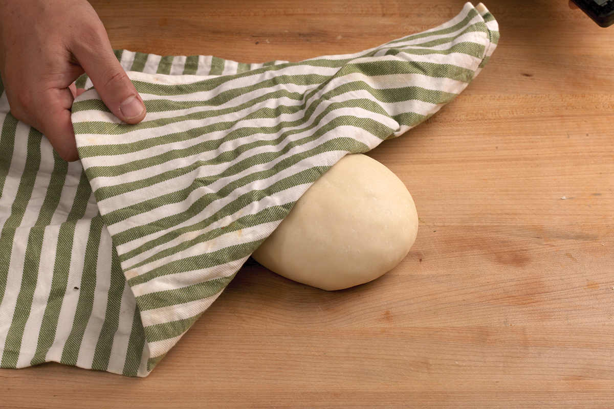
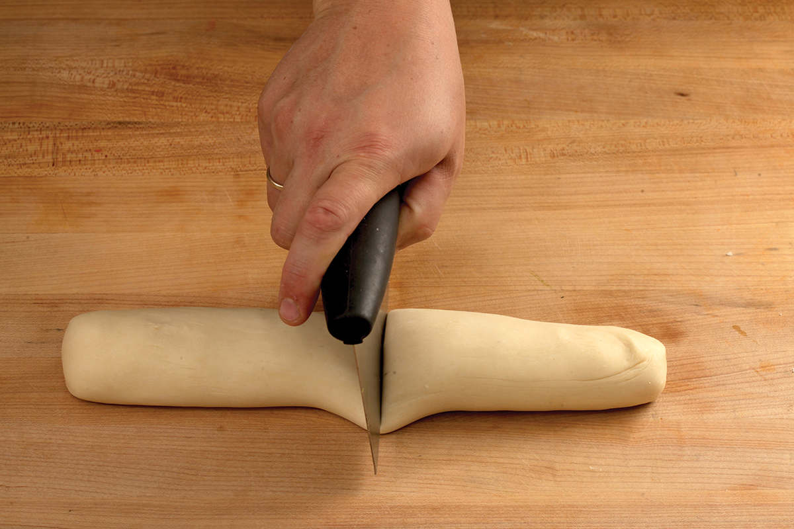
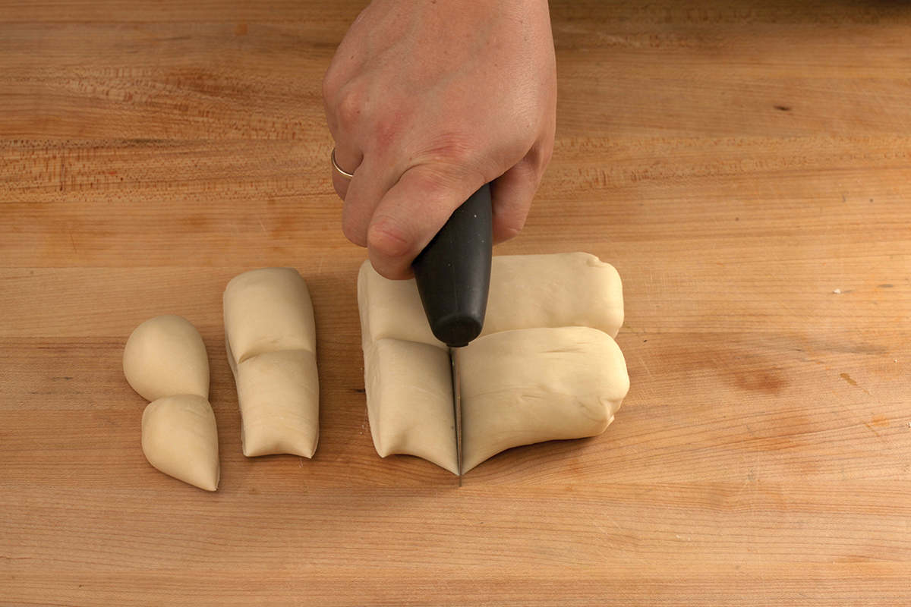
DIRECTIONS
1Place the flour in a medium bowl. Add the boiling water in a thin stream while stirring with chopsticks or a wooden spoon. It helps to have a friend stabilize the bowl while you do this or to set the bowl in a heavy saucepan lined with a dish towel to keep it stable. Add the cold water in a thin stream, continuing to mix the whole time. Stir the mixture until it turns into a shaggy ball, then dump the ball out onto a lightly floured work surface.
2Knead the dough with your hands until it forms a smooth ball, about 5 minutes. Cover the dough ball with a damp dish towel and let rest for at least 30 minutes and up to a couple hours.
3Roll the dough into a long log, then cut it in half. Line up the two half-logs, then further split them to form 12 to 36 evenly sized pieces (12 pieces for approximate 8-inch pancakes, 16 pieces for approximate 7-inch pancakes, 20 pieces for approximate 6-inch pancakes, or 36 pieces for approximate 4-inch pancakes).
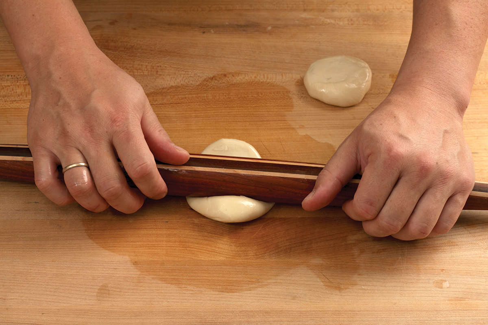
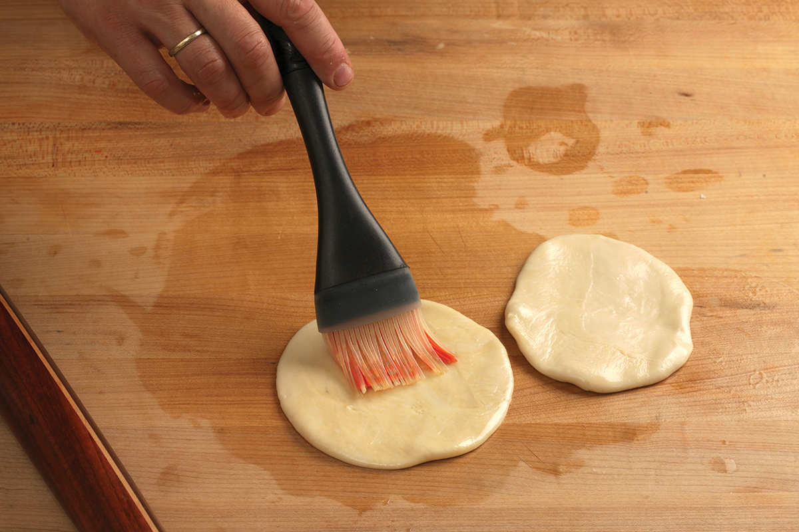
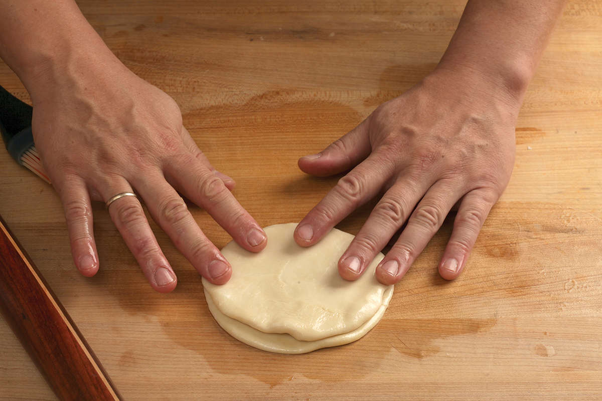
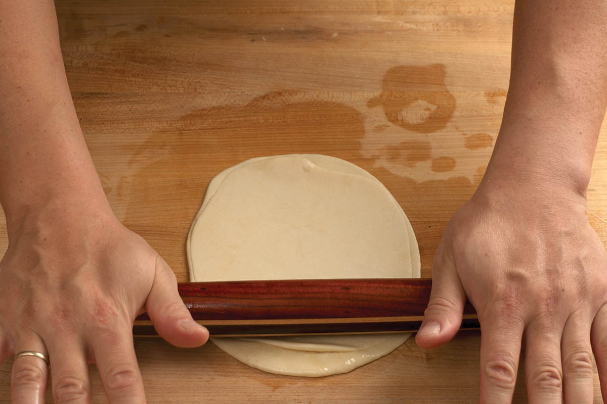
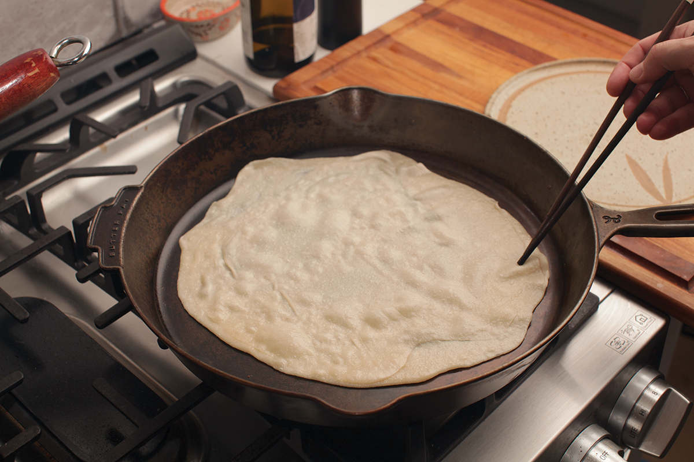
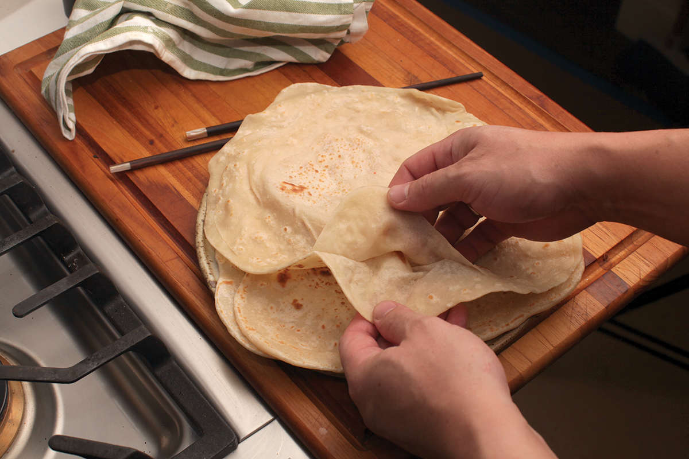
4Working two pieces at a time, roll each piece into a smooth ball between your hands, then, using a rolling pin or wine bottle, gently roll them into circular disks about ¼ inch thick.
5Brush the top of one disk with a thin, even layer of oil, then stack the second disk on top. Using a rolling pin, roll the stacked disks into a circle; the size of the circle depends on the number of balls you made (see step 3).
6Preheat a cast iron, carbon steel, or nonstick skillet over medium heat, then add the rolled, stacked disk. Let cook on one side until blistered and browned in spots, about 1 minute. Flip and cook until the second side is blistered and browned. Sometimes the pancakes will bubble up with steam as they cook, preventing the second side from making good contact with the pan. You can gently press down on them with a flat spatula if this happens.
7Remove the cooked disks, then carefully peel them apart into two thin pancakes while still hot. Transfer to a plate and cover with a clean dish towel.
8Repeat steps 4 through 7 for the remaining dough balls. Finished pancakes should be served immediately. To store leftovers, place the pancakes on large squares of plastic wrap or aluminum foil, then roll them up like a jelly roll and refrigerate. Reheat covered in the microwave or by briefly heating one at a time in a hot, dry skillet.
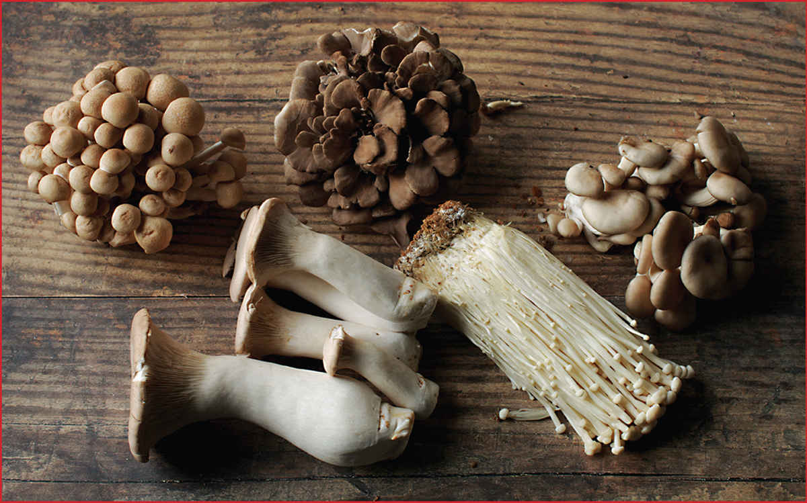
Common Asian Mushrooms
Mushrooms are a staple in Asian cookery. While Western varieties of mushroom work well in many stir-fries and other dishes, it’s good to get familiar with common Asian varieties to expand your repertoire. Mushrooms are grown or harvested in dirt or straw, so you can expect them to have a bit of dirt on them when you buy them. You can wipe off excess dirt with a paper towel, a pastry brush, or a quick rinse under the tap (contrary to popular belief, mushrooms don’t really absorb much liquid when you wash them).
No matter what type of mushroom you are shopping for, look for specimens that are smooth and blemish-free with a dry (not slimy or wet) appearance.
 Oyster mushrooms come in white, brown, or even grayish blue varieties. They have tender, gilled flesh and a mild flavor with hints of bitter almond (thanks to the chemical benzaldehyde) and anise. They’re great stir-fried or sautéed. Trim off the tough bottom stem of oyster mushrooms before cooking.
Oyster mushrooms come in white, brown, or even grayish blue varieties. They have tender, gilled flesh and a mild flavor with hints of bitter almond (thanks to the chemical benzaldehyde) and anise. They’re great stir-fried or sautéed. Trim off the tough bottom stem of oyster mushrooms before cooking.
Shiitake mushrooms can be found fresh or dried. When young and fresh their flavor is quite mild but packs a nice umami punch. More mature shiitake, and especially dried and rehydrated shiitake, have a powerful earthy, savory aroma with a hint of smokiness. They’re excellent multipurpose mushrooms that work stir-fried and sautéed, simmered in soups and broth, or grilled. Shiitake stems are tough and leathery and should be removed by pinching the stem between your fingertips right where it meets the cap and pulling it out before cooking.
Shimeji mushrooms come in a few varieties, either white or brown. They’re also sold as beech or clamshell mushrooms. Their texture is pleasantly crunchy and tender, and they have a nutty flavor with a fresh, grassy undertone. Shimeji mushrooms have to be cooked before being eaten as they’re unpleasantly bitter when eaten raw. They’re best quickly sautéed or stir-fried but are also commonly used in soups. Shimeji mushrooms require minimal trimming—just remove the dirty nub at the bottom of the stem. You can separate them into individual mushrooms by breaking them apart with your hands.
Wood ear mushrooms. See here for more details on shopping or “Working with Dried Wood Ears” on this page for details on preparing.
Enoki mushrooms have a similar aroma to that of oyster mushrooms, albeit much milder. Their texture is mildly crunchy. They’re best stir-fried or in thin soups where they can sop up broth like a bundle of noodles. The individual stems merge into one large stem at the bottom. Cut the mushrooms off just above where the stems merge before cooking.
King oyster mushrooms, also known as trumpet royale, king trumpet, or eryngii, are large, extrameaty mushrooms with a round cross section that can span up to a couple inches. Like oyster and enoki mushrooms, they have a very mild flavor, especially when raw. When cooked, especially when browned, they develop a strong umami flavor with a tender, meaty texture similar to abalone. They’re best split lengthwise and sautéed or stir-fried until well browned. As for oyster or shimeji mushrooms, only the very bottoms of the stems need to be trimmed off before cooking.
Maitake mushrooms, also called hen-of-the-woods or ram’s head, are sold in frilly, voluminous tufts. They have a very intensely nutty, savory flavor that’s best when enhanced by some browning by a good, long, hot sauté or stir-fry or by tossing them with a little oil and roasting them whole until the edges become nice and crispy. Like a good piece of meat, maitake mushrooms don’t need much more than a pinch of salt and pepper to bring out their flavor, though they do just fine with sauces and other aromatics. These guys are definitely my favorite. Trim off any woody bits from the base of the stem. You can leave them whole for roasting or separate them into frilly fronds with your fingers for sautéing.
Matsutake mushrooms (not pictured) are one of the most highly prized mushrooms in Japan, fetching prices of up to $500 a pound for the highest-quality specimens. They have a uniquely spicy, citrusy aroma. Lower-quality mushrooms can be grilled or sautéed, while the best are typically treated more like truffles: raw and thinly shaved, particularly into hot clear broths, where the heat from the broth releases and aerosolizes the mushroom’s aroma. Trim the very end of the base off the mushroom before using.
KNIFE SKILLS
Working with Dried Wood Ears
Remember those little rubber dinosaurs you had as a kid that you’d place in a cup of water, then over the course of a few days, they’d grow and grow and grow until they were the size of a mop bucket? Wood ear mushrooms are the Magic Grow Dinosaurs of the culinary world. They start as hard, plastic-like, shriveled nubs, but place them in a bowl of hot water and over the course of 15 to 20 minutes they gradually absorb water and unfurl until they achieve their final large, smooth, ear-shaped form.
Once rehydrated, the little nub where the mushroom formerly attached itself to a tree needs to be removed, as it’s typically too tough to eat. (If you are anatomically inclined, it’s the bit that’s the equivalent of the tragus—the little nub in front of your ear hole—on the human ear.) You can do this by pinching it off with your finger and thumb.
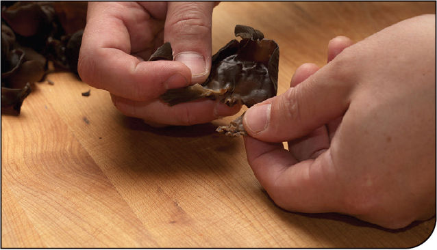

Once that nub is gone, you can slice the wood ear into fine shreds.
*These pancakes are known variously as chun bing, dan bing, or bao bing, depending on what they’re being served with or where you are.